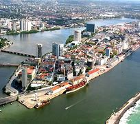

Lugares para Viajar e Conhecer no Brasil
Regiões do Brasil
Capitais de Estados desta Região
Capitais de Estados desta Região
Recife

João Pessoa
Natal
Maceió
São Luís
Fortaleza
Salvador
Teresina
Aracaju
Capitais de Estados desta Região
Porto Alegre
Florianópolis
Curitiba
Capitais de Estados desta Região
Capitais de Estados desta Região
Campo Grande
Cuiabá
Goiânia
Distrito Federal
Brasília
Para consultar as demais cidades do país, acesse demais cidades